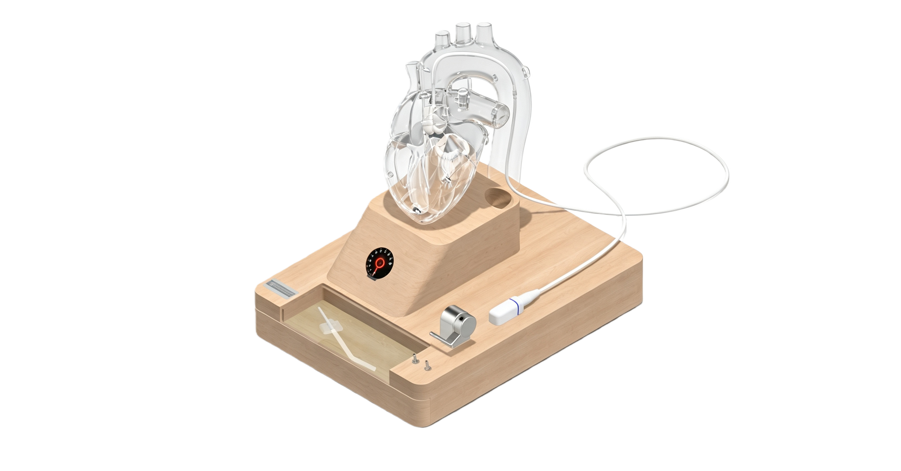
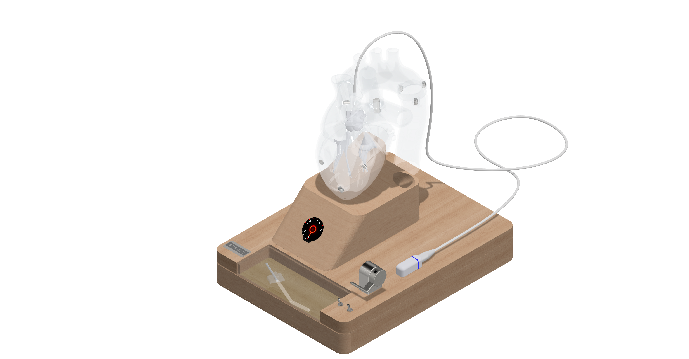
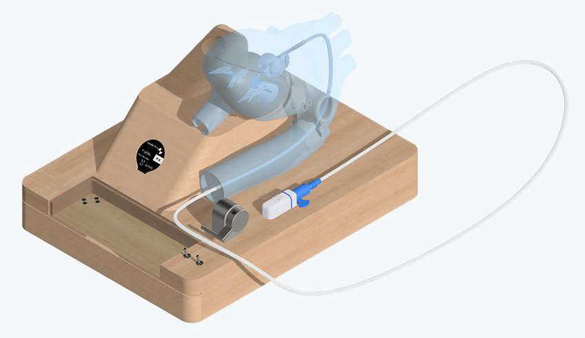
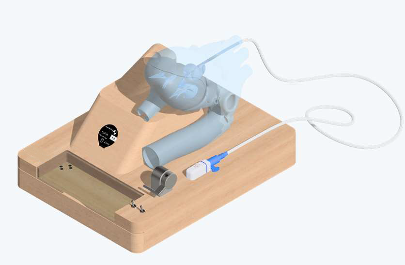

Procedural Training
Enable trainees to proficiently master standard pLVAD implantation workflows. Both femoral and axillary access routes fully reproduced for hands-on practice.
Learn more
A compact, professional simulation platform for
procedural training, technical demonstration, and patient education
Designed by Cardingenium Medical Technology
Designed for pLVAD clinical teams
Overview
This system provides a safe, non-clinical simulation environment for users to proficiently master standard pLVAD device implantation workflows and core operating principles. With a space-saving and portable design, it fits equally in simulation labs and clinicians' offices. As a cost-effective alternative to training on an original device, it significantly reduces the cost of damage incurred during hands-on practice and demonstrations.




Use Cases
Three core application scenarios covered in a single compact platform.
Enable trainees to proficiently master standard pLVAD implantation workflows. Both femoral and axillary access routes fully reproduced for hands-on practice.
Learn morePlace the system in clinicians' offices to visually and vividly explain pLVAD surgical procedures to patients pre-operatively, improving doctor-patient communication.
Learn moreDemonstrate device mechanics and operating principles on-site. The adjustable impeller motor and LED illumination system enable vivid visual demonstrations at any speed.
Learn moreFeatures
The transparent heart model includes left and right heart chambers, aortic valve, mitral valve and tricuspid valve — all made from soft material. The aortic valve is detachable and replaceable due to wear. The transparent cover attaches via magnetic connection, enabling clear visual inspection of the heart pump installed inside.
The simulated pLVAD pump is equipped with a continuously adjustable high-speed motor. Theoretical impeller speed can reach 50,000 rpm; the system limits maximum speed to extend motor service life. A micro-LED above the impeller provides real-time visual feedback of rotational status. For demonstration at ultra-low speed (~5 revolutions per second), push the lever to high speed first, then slowly pull back.
Inspired by aircraft cockpit design, the speed control lever operates like an aircraft thrust lever. Push forward to increase impeller speed (P0–P9). Pull-to-unlock toggle switches manage main power supply and impeller LED separately, providing an intuitive and memorable training experience.
Supports both 5V USB-C power and four AA batteries, enabling flexible deployment without fixed power sources. Ideal for offline training sessions, on-site product demonstrations, and patient education. Note: Type-C to Type-C cables may cause device failure — use a standard USB-A to USB-C cable.
The outer layer of the heart pump hose is made of soft PTFE, enabling smooth training operations without liquid lubrication. Constructed with a Nitinol spring and TPU sheath for realistic procedural tactile feedback. The pigtail catheter is replaceable to extend system service life.
The onboard display shows operating parameters including P-level (P0–P9) and corresponding mean flow rates, replicating a clinical pLVAD controller interface.
| P-Level | Mean Flow Rate (L/min) |
|---|---|
| P-0 | 0.0 |
| P-1 | 0.0 – 0.9 |
| P-2 | 1.1 – 2.1 |
| P-3 | 1.6 – 2.3 |
| P-4 | 2.0 – 2.5 |
| P-5 | 2.3 – 2.7 |
| P-6 | 2.5 – 2.9 |
| P-7 | 2.9 – 3.3 |
| P-8 | 3.1 – 3.4 |
| P-9 | 3.3 – 3.7 |
Components
Each component of the pLVAD system is engineered to replicate real clinical anatomy and device mechanics.
Left & right chambers, aortic arch, descending aorta, three soft silicone valves. Magnetic assembly and disassembly. Replaceable aortic valve.
Designed and manufactured at 1:1 scale. Rotatable impeller with adjustable speed, micro-LED illumination, butterfly magnetic connector at catheter tail.
Integrates heart model bracket, storage drawer, display screen, battery compartment, power switch, and aircraft-inspired speed control lever.
Includes EasyGuide Lumen, 0.018-inch installing guidewire, pump fixing clip, and storage for the original heart pump in the drawer compartment.
Customization
Every hardware, software, and interface element can be tailored to specific training needs — a selection of add-on modules is shown below.
Femoral and axillary artery vascular modules connect to the heart model via quick adapters, with an optional sensor system for real-time positional tracking of the pump.
A dual-tank fluid circuit shows fluid moving into and out of the aorta in real time, with an electric pump recirculating flow — a clearer alternative to a plain water-submerged demo.
Real-time rendered ultrasound and cardiography imaging from live camera input, with patient-case loading, scenario simulation, and voice-guided procedural debriefing.
A desktop-ornament version of the heart model for clinicians' offices, with an optional heart-pump-shaped pen accessory for a practical, branded touch.
Contact
Interested in the pLVAD Training & Demonstration System for your institution, simulation center, or collaboration? Contact Cardingenium Medical Technology GmbH directly.
Safety Notice
For training & demonstration only.
Not for clinical treatment or patient support.
FAQ
No. This device is strictly for training and demonstration only. It must not be connected to real patients, invasive medical equipment, extracorporeal circulation devices, or clinical monitoring instruments. The simulation pump and cardiac model do not possess clinical safety, biocompatibility, or hemodynamic performance of a genuine pLVAD device.
The system supports both mainstream clinical access approaches: femoral artery access and axillary artery access into the left ventricle. Both vertical and horizontal heart model placements are available to cover diverse clinical training scenarios.
Dual power supply: four AA batteries or 5V USB (USB-A to USB-C cable). The USB port is located on the rear of the device base and can also be used for firmware upgrades. Do not use damaged, swollen, or modified batteries. Note: Type-C to Type-C power cables may cause the device to fail.
Yes. An embedded micro-LED above the impeller provides real-time visual illumination. For slow-rotation demonstration, first push the speed lever to high speed, then slowly pull it back — this allows the impeller to rotate at approximately 5 revolutions per second for easy visual observation. The transparent heart model cover enables clear viewing of the pump inside the heart.
The aortic valve is designed to be detachable and replaceable due to wear. The pigtail catheter is also replaceable. Custom configurations are available including axillary artery access versions, sensor modules, fluid-filled versions, compact versions, and custom AI-rendered imagery — contact Cardingenium for details.
Keep the system away from prolonged direct sunlight, particularly the transparent cardiac model and pigtail catheter, to prevent yellowing and material aging. For long-term storage, remove batteries and store separately in a cool, dry location. Do not immerse electrical components in water or liquid. Do not disassemble the motor, power module, or control circuit without authorization.